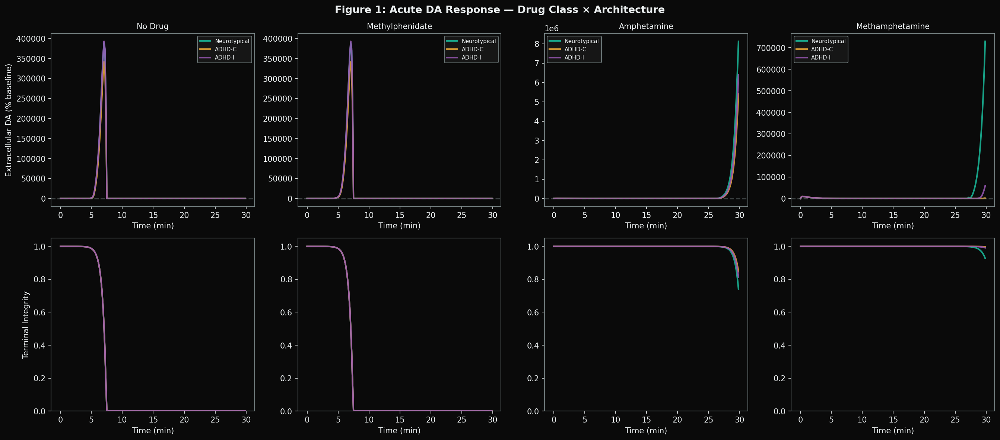
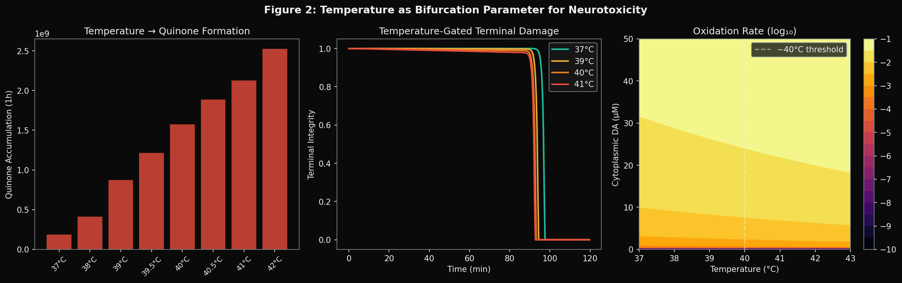
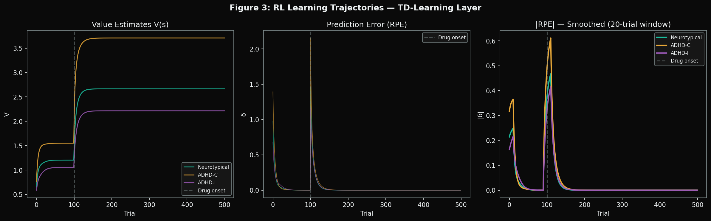
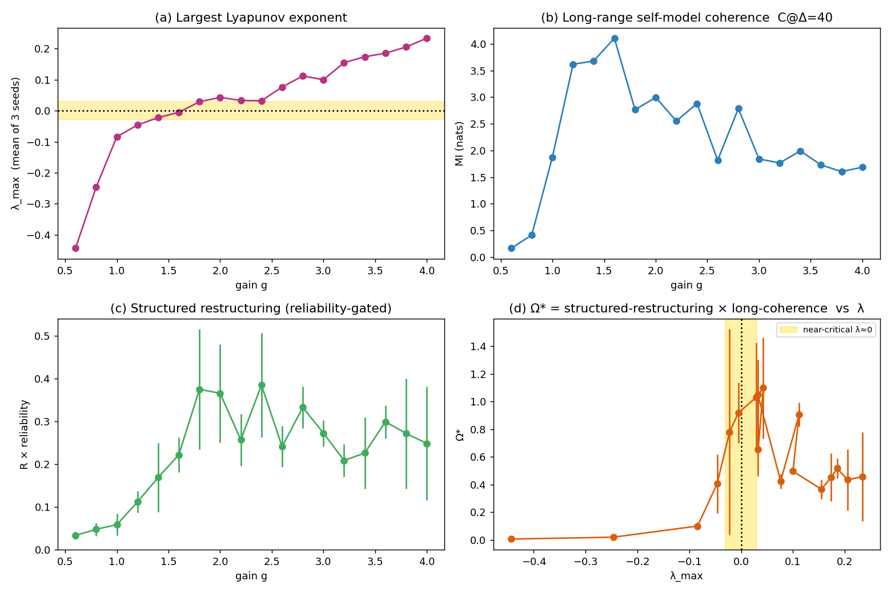

Independent Researcher — Neuroscience × Computation
Computational models of perturbed neural dynamics — substance pharmacology, neurodivergence, and the boundary conditions of coherent cognition. Interdisciplinary work spanning dynamical systems, reinforcement learning, and music.
> selected work below_
Stimulant medication for ADHD shares core pharmacology with methamphetamine, yet the two are clinically opposite in outcome. This model couples terminal dopamine kinetics, temperature-dependent oxidative toxicity, locus-coeruleus gain control, and reinforcement learning across timescales from milliseconds to months, parameterized for neurotypical and two ADHD architectures.
It identifies temperature — not extracellular dopamine — as the dominant bifurcation variable for neurotoxicity, explains why sleep loss amplifies stimulant reinforcement, predicts that ADHD-Combined architectures inflate drug value faster than neurotypical ones while ADHD-Inattentive architectures benefit more from low-dose therapeutics, and reproduces the chronic-use tolerance trajectory seen in PET imaging.



Tests whether Ω = (representational restructuring) / (identity / coherence loss) has an interior maximum along the ridge where the largest Lyapunov exponent λmax ≈ 0 — between order and chaos. A 128-unit rate network was driven across the order-to-chaos transition (Sompolinsky–Crisanti–Sommers gain route), with coherence measured as long-range mutual information of a low-D self-model and restructuring gated for reproducibility.
| Quantity | Ordered (λ<-0.1) | Near-critical (|λ|≤0.05) | Chaos (λ>0.1) |
|---|---|---|---|
| Long-range coherence C@Δ=40 | 0.29 | 3.23 | 1.93 |
| Structured restructuring | 0.04 | 0.27 | 0.26 |
| Ω* = struct-R × long-coherence | 0.01 | 0.85 | 0.52 |
Verdict: supported, under load-bearing operationalizations. The hypothesis fails under naive measures (short-lag coherence, raw perturbation-sensitivity) and only holds once coherence is measured at long temporal range and restructuring is gated for reproducibility against noise. λ≈0 is a robust local optimum of structured reorganization with retained coherence — whether it is the global optimum depends on exactly those two assumptions, which are defensible but not free.

Midwest emo, pluggnb, math rock, indie rock, post hardcore — released under EV on Suno.